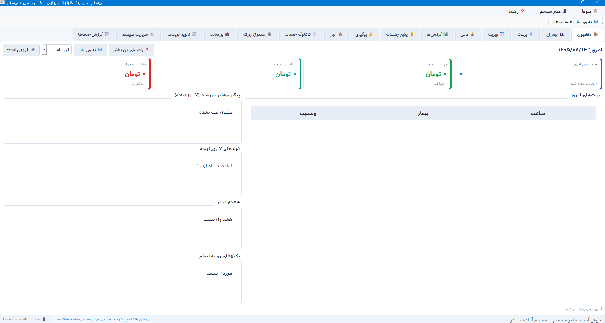
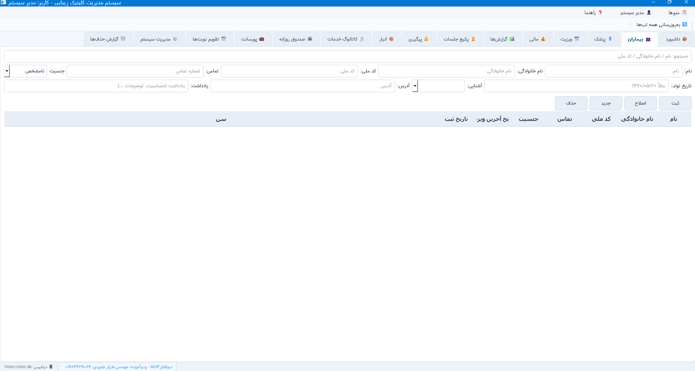
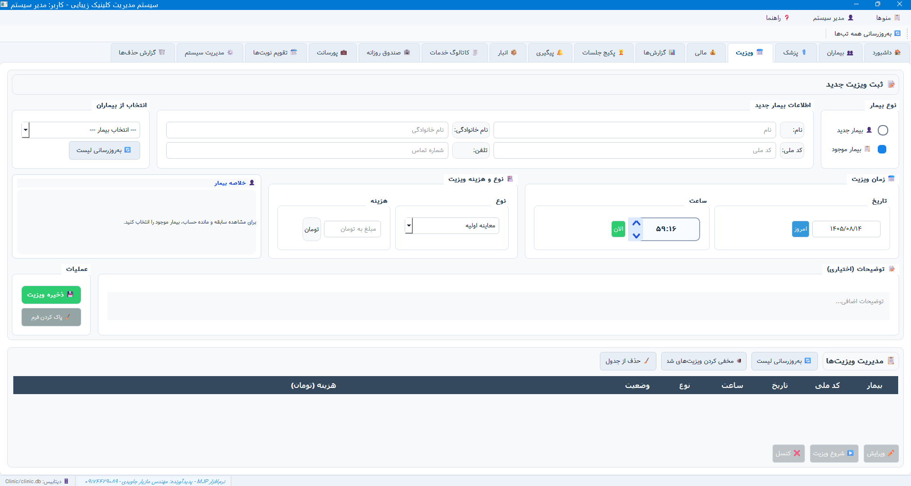
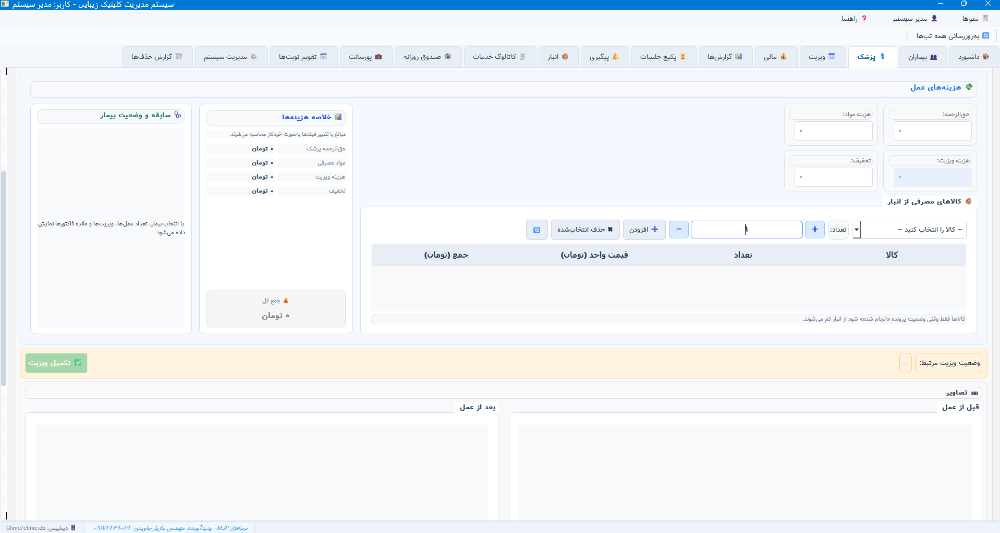
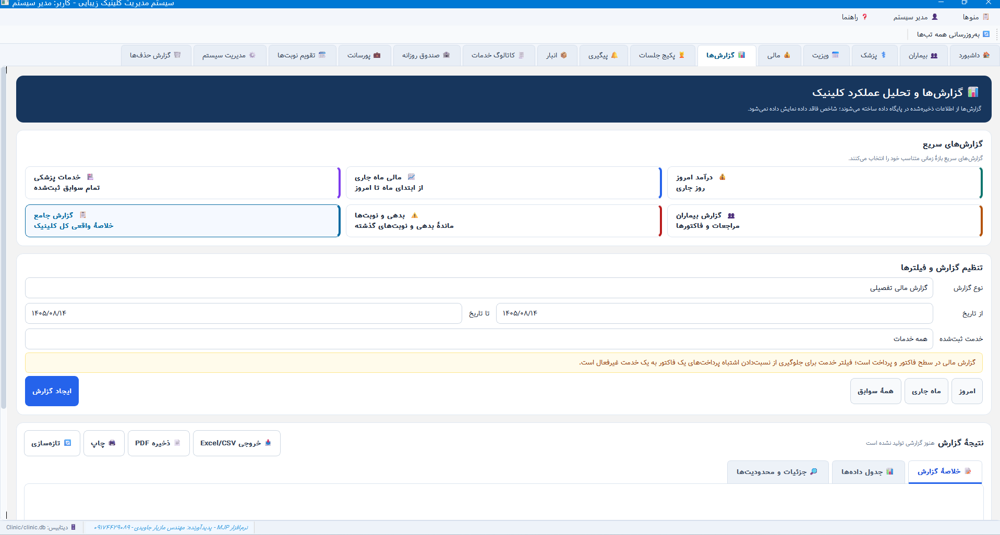

پرونده و سوابق بیماران
ثبت و مشاهده اطلاعات هر بیمار و دسترسی به سوابق ثبتشده برای پیگیری مراجعههای قبلی.
نرمافزار دسکتاپ مدیریت کلینیک زیبایی خدمات آلفا برای ساماندهی پروندهها، پیگیری ویزیتها، ثبت عمل و هزینهها و مرور اطلاعات مالی در یک محیط فارسی و راستچین طراحی شده است.
قیمت، نسخه قابل ارائه و شرایط پشتیبانی در صفحه محصول فروشگاه درج خواهد شد. در حال حاضر دکمه خرید به فروشگاه آنلاین هدایت میکند.

بخشهای اصلی در یک برنامهٔ دسکتاپ فارسی کنار هم قرار میگیرند تا پیگیری اطلاعات مراجعان و امور روزانه سادهتر شود.
ثبت و مشاهده اطلاعات هر بیمار و دسترسی به سوابق ثبتشده برای پیگیری مراجعههای قبلی.
ثبت و پیگیری وضعیت ویزیتها؛ از رزرو تا در حال ویزیت، تکمیل و لغو مراجعه.
ثبت اطلاعات مربوط به عمل و خدمات، هزینههای مرتبط و جزئیات موردنیاز برای مراجعه.
مرور اطلاعات مالی ثبتشده و گزارشگیری بر پایه دادههای موجود در برنامه.
ثبت اقلام و خدمات مرتبط با پرونده و مراجعه، در بخشهای مربوط به بیمار و عمل.
نگهداری و مشاهده تصاویر مرتبط با پرونده، از جمله تصاویر قبل و بعد در صورت ثبت آنها.
تصاویر زیر جایگاه آماده دارند. کافی است بعداً اسکرینشاتهای خود نرمافزار را با نامهای مشخصشده در مخزن سایت بارگذاری کنی؛ هر تصویر بهصورت خودکار در جای خودش نمایش داده میشود.





کلینیکهای زیبایی و مراکزی که میخواهند اطلاعات مراجعه، سوابق، خدمات و هزینهها را منظمتر ثبت کنند.
این برنامه یک نرمافزار دسکتاپ است. امکانات آنلاین، ابری یا استفاده همزمان چند کاربر در این صفحه وعده داده نشدهاند؛ مشخصات نسخه قابل فروش و شرایط نصب باید پیش از خرید در صفحه محصول نهایی شود.
برای مشاهده محصولات و پیگیری خرید آنلاین وارد فروشگاه خدمات آلفا شوید.
ورود به فروشگاه آنلاین پرسش درباره نرمافزار